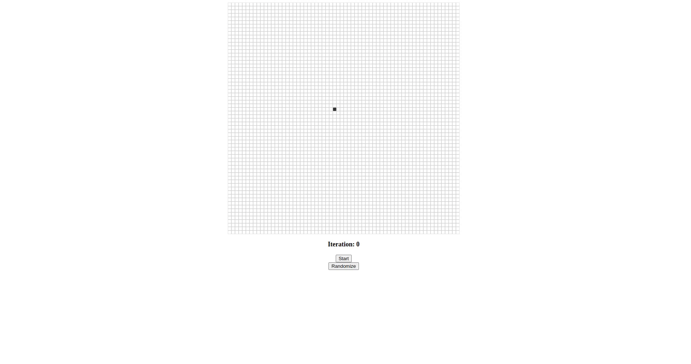

In the 1940's, John Von Neumann and Stanislaw Ulam wanted to design a computer able to self-repair.
In the real world an object can be produced only from a more complex object, suppose you want to replicated a piece
of paper.
In order to create one you need to have a more complex object, a printer.
The printer is a much more complex system than the paper, and in order to create a printer, you need a lot of
smaller components which are themselves complex and so on.
However, this is not what happens in nature, cells are capable of self-replicating and self-repairing,
so, scientists contemplated the idea of creating a system that has such capabilities.
Tackling such a problem is not easy, so scientists decided to simplify the problem.
How to find the logical mechanisms for self-reproduction?
Finding an algorithm to acheive transcription and translation would be a great start, it would also be easier to
formalize these concepts in a descrete world.
This is when the idea of cellular automata was born.
A cellular automata is a mathematical abstraction of the real world, a modeling framework in which everything is
discrete.
There are many examples of cellular automata, in this blog we will be looking at two examples, both use a square
lattice (a grid).
Although the square lattice is the most common, it is possible to use a hexagonal lattice, a triangular lattice or
even a three dimensional lattice (a cube).
It is also possible to make a simpler automaton, for example, a one dimensional automaton.
Take a look at wolfram's automata.
In the first example we will be looking at an automaton (i.e. a specific cellular automata) that uses the parity
rule.
Here a cell has only two states, dead or alive (0 or 1), a dead cell is a white cell, an alive cell is a black cell.
Each cell sums up the states of its four neighbors (up, down, left, right).
If the sum is even, the new state of the cell is 0, otherwise it is 1.
Each cell sums up the states of its four neighbors, you can see the neighboring cells in the image. These are the four white cells that have a black border.

If we start with only one cell alive, the next generation will look like so

Implementing the rule is pretty simple for the inner cells, but what about the cells on the edge?
How do we handle the cells that don't have four neighbors?
There are many ways to handle such cells, these are called boundary conditions, here are a few examples:
E.g. the neighboring cells for the top left cell would be:
In this blog we will be using the periodic boundary condition.
It is relatively easy to create a cellular automata in p5.js. You can take a look at the complete code
here.
In general, we have a grid of cells that saves the state of each cell, when a cell is clicked it flips its state.
when the start button is clicked the simulation starts.
The most important part is how to implement a certain rule for the automaton (in this case the parity rule), and
how
to enforce the boundary conditions (in this case the periodic boundary condition).
To implement the parity rule, we need to sum up the states of the four neighbors, and then check if the sum is
even or odd.
At each iteration, every cell needs to be updated, so we need to save the new state of each cell in a temporary
grid. Then we can sum up the four neighbors of each cell and check the parity.
There are many ways to sum up the four neighbors, the best and the most efficient one is to use the modulo
operator. Doing so, not only we can sum up the neighbors, but we can also enforce the periodic boundary.
for (let i = 0; i < gridVSize; i++) {
for (let j = 0; j < gridHSize; j++) {
iM = (i - 1) % gridVSize;
iP = (i + 1) % gridVSize;
jM = (j - 1) % gridHSize;
jP = (j + 1) % gridHSize;
grid[i][j].alive =
(gridCopy.at(iM).at(j).alive +
gridCopy.at(iP).at(j).alive +
gridCopy.at(i).at(jM).alive +
gridCopy.at(i).at(jP).alive) %
2;
}
}
Here gridVSize and girdHSize are the vertical and horizontal size of the grid
respectively.
The modulo operator ensures that when the index equals the size of the grid, it will be set to 0, so back at the
start of the grid.
On the other hand, the Javascript at function is used to access the element at a certain index, if
the index is -1, it will be set to the last element.
This is how the periodic boundary condition is enforced.
Let's take a look at the parity automaton in action. We will begin with a single cell alive approximately at the middle of a 64x64 grid.
The gif below shows the first 7 iterations of the parity rule
Despite the simplicity of the rule we can already see complex shapes forming, a shape that "copies" itself
Let's see an example of a more complex initial state, take a look at this video. the initial shape is somewhat triangular.
We can see that the automaton generates the same shape multiples times in a different positions.
Pause at iteration 4, the triangular shape is reproduced, there are now 4 shapes instead of one.
At iteration 12, the triangular shape is reproduced again, now there are 16 shapes instead of 4.
At different iterations we can see intrecate patterns forming, this is the beauty of cellular automata, we began with a simple rule and a simple initial state, and we ended up with complex patterns.
If you watched the video till the end, you would have noticed that at iteration 32, the grid is empty, all cells are white. This is not an error, in fact this is the expected behavior of the parity rule given the grid size.